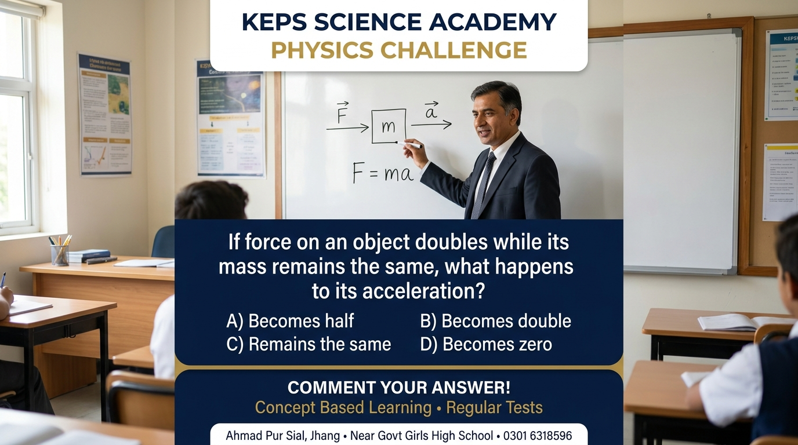

PHYSICS CHALLENGE #1 · 18 Oct 2026 · 9th / 10th Physics — Newton's Laws of Motion

The Question
If force on an object doubles while its mass remains the same, what happens to its acceleration?
- A) Becomes half
- B) Becomes double
- C) Remains the same
- D) Becomes zero
Correct Answer: B) Becomes double ✅
Explanation: Newton's second law of motion says F = ma, so acceleration a = F/m.
If mass (m) stays the same and force (F) becomes 2F, then new acceleration = 2F/m = 2a — double.
Force and acceleration are directly proportional when mass is constant.